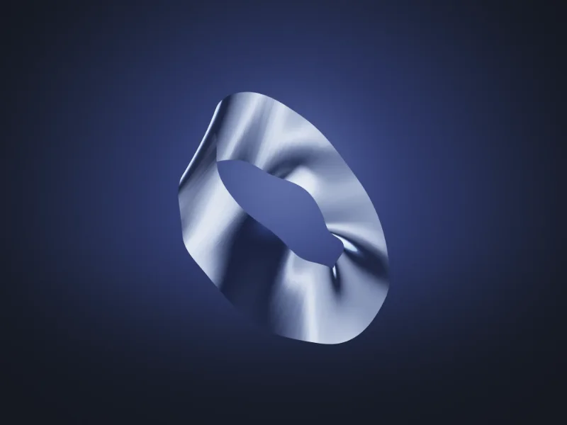
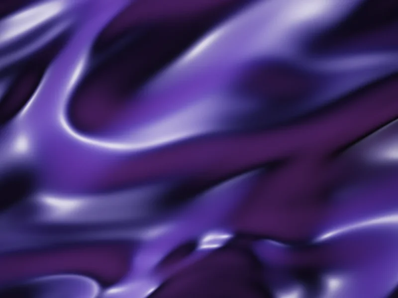
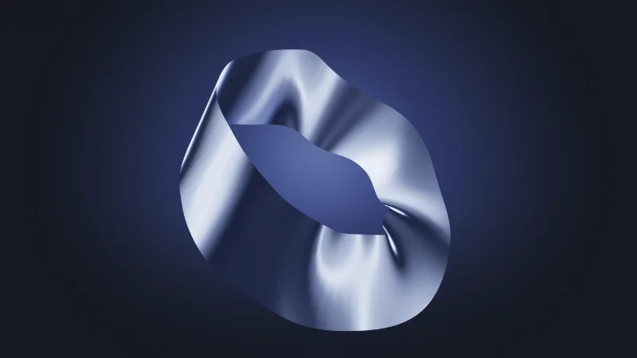

Signature · Fas 2
Byggstenarna.
Delarna som varje kunds sajt sätts ihop av, på sitt eget sätt. Var och en fungerar lika bra utan rörelse, utan WebGL och utan JavaScript.
Idé · Rörelse · Hantverk · Tillgänglighet · Hastighet ·
04 Så blir en sajt till Sidledsberättelse
05 Från delar till helhet Ett föremål i 3D

-
Splittrat
Allt material finns, men inget hänger ihop än.
-
Riktat
Idén ger varje del sin plats.
-
Helt
Sajten blir en sak, inte en samling sidor. För en kund med en riktig produkt är det produkten som byggs ihop här.
06 Knappar som lyssnar Markör och magnetiska knappar
Med mus eller styrplatta följer en liten prick pekaren och växer över det som går att klicka på, och knapparna lutar sig mot den när den kommer nära. Systemets egen pekare finns alltid kvar, och på pekskärm och med tangentbord finns inget av det här.
07 Bilder som anländer Bildeffekt

Bilden kommer fram bakom en levande kant när den rullar in, och under muspekaren sväller den lätt, som under en lins. Själva bilden ligger kvar i sidan för skärmläsare, sökmotorer och alla utan WebGL.

08 Bilder i sidled Galleri
Dra med musen, svep, eller använd piltangenterna. Bilderna glider i sina ramar medan de passerar.
-

01 Siden, natt -
03 Siden, terrakotta -

04 Bandet, i delar -

05 Siden, skog
09 Film gjord i kod Video
En slinga på åtta sekunder, renderad bildruta för bildruta från labbets eget band och spelad som film. Telefonen avkodar den i hårdvara i stället för att rita WebGL. Den laddas först när den kommer nära, spelar bara medan den syns och kan alltid pausas.

Bandet, ett varv. Åtta sekunder i 30 bilder per sekund, AV1 eller H.264, under 600 KB. Med mindre rörelse spelar den först när du ber om det, och med sparad data visas bara stillbilden.